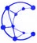

AGENDA CONECT
Todas as experiências.
Acompanhe os eventos programados, em destaque e as experiências que já aconteceram.

CONECTF O N O← Voltar para o inícioAGENDA CONECT
Acompanhe os eventos programados, em destaque e as experiências que já aconteceram.